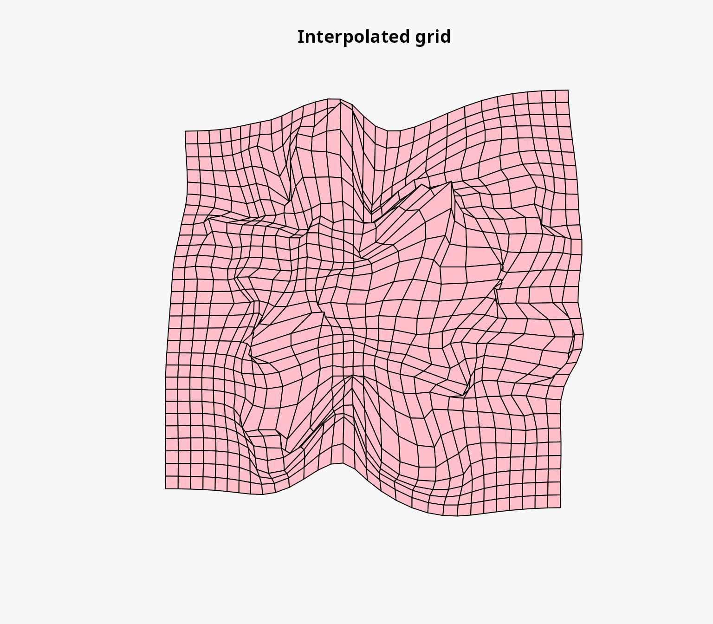
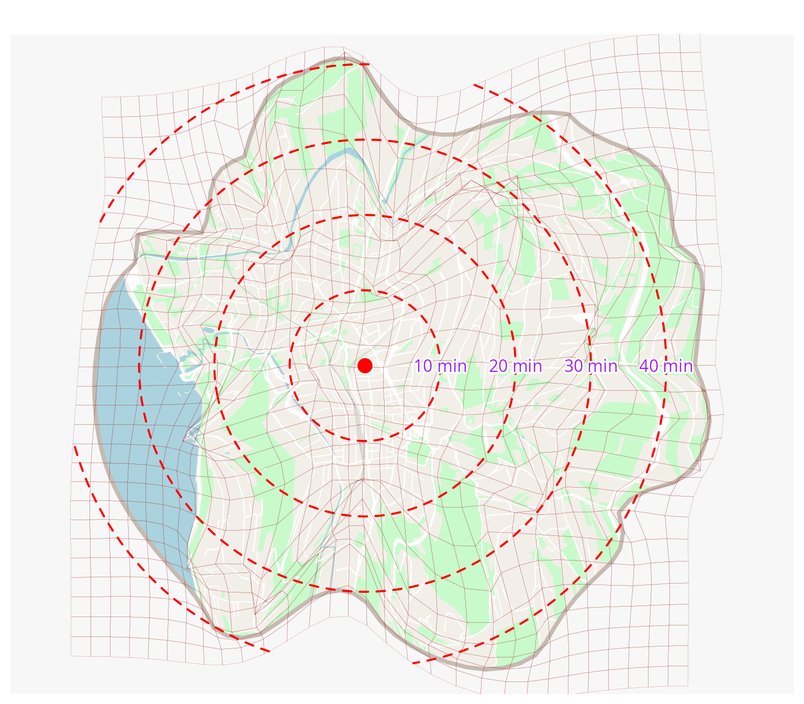

Creating a distance cartogram using OSM data
Matthieu Viry
2025-04-10
Source:vignettes/web_only/with-osm-data.Rmd
with-osm-data.RmdIntroduction
We are looking to build a unipolar distance cartogram (also called a centered time cartogram) using only data from OpenStreetMap (OSM): it is going to use both geographic layers describing the territory and travel time data from OSM.
This type of cartogram visualizes travelling times from a reference starting location to other destinations in a selected area. In the resulting map, the geographic distance is replaced by time distance and the underlying map layers are deformed accordingly.
This highlights the use of several packages developed at RIATE, including:
-
mapsfto create maps withsfobjects, -
osrmfor calculating distance-time matrices from OSM data and an OSRM instance, -
valhfor calculating distance-time matrices from OSM data and a Valhalla instance, -
maposmto easily retrieve OSM data (this is a wrapper aroundosmdata), -
distanamofor creating distance cartograms.
Installing and importing packages
mapsf and osrm are available both on CRAN
and on riatelab’s
r-universe while distanamo and maposm are
only available from riatelab’s
r-universe.
As a result, we propose to install all the packages from r-universe:
repos <- c("https://riatelab.r-universe.dev", "https://cloud.r-project.org")
install.packages("mapsf", repos = repos)
install.packages("osrm", repos = repos)
install.packages("distanamo", repos = repos)
install.packages("maposm", repos = repos)Once installed, we can import the necessary packages:
Fetching OSM data
We are now retrieving OSM data for the study area of our choice: here we are interested in the accessibility (by foot, but we will see this later) from the market hall of Chambéry.
Let’s get the coordinates of the address of Chambéry’s market hall and then fetch the data for a radius of 3000 meters around it:
bb <- osmdata::getbb("10, Place Georges Clemenceau, 73100 Chambéry, France")
lon <- mean(bb[1, ])
lat <- mean(bb[2, ])
res <- om_get(c(lon, lat), r = 3000)
#> Getting urban areas: 29.186 sec elapsed
#> Getting green areas: 20.762 sec elapsed
#> Getting roads: 18.48 sec elapsed
#> Getting streets: 20.314 sec elapsed
#> Getting railways: 0.681 sec elapsed
#> Getting water bodies: 4.091 sec elapsedWe can see that the resulting object is a list of sf layers:
names(res)
#> [1] "zone" "urban" "building" "green" "road" "street" "railway"
#> [8] "water"Defining a reference point
We need to define a reference point from which the travel times will be computed. Since we used the address of Chambéry’s market hall as a center point to fetch the data, we can use the center of the circle that includes all the data:
start <- st_centroid(res$zone)Sampling points
We then need a set of destinations to compute the travel times to. To do so, we sample roughly 200 points on the road network. Note that we use both the road and street network layers here, but in some cases (particularly when using a car profile) it may be appropriate to use only the road network.
Making a map of the result
mf_map(res$zone, col = "#f2efe9", border = NA, add = FALSE)
mf_map(res$green, col = "#c8facc", border = "#c8facc", lwd = .5, add = TRUE)
mf_map(res$water, col = "#aad3df", border = "#aad3df", lwd = .5, add = TRUE)
mf_map(res$railway, col = "grey50", lty = 2, lwd = .2, add = TRUE)
mf_map(res$road, col = "white", border = "white", lwd = .5, add = TRUE)
mf_map(res$street, col = "white", border = "white", lwd = .5, add = TRUE)
mf_map(res$building, col = "#d9d0c9", border = "#c6bab1", lwd = .5, add = TRUE)
mf_map(res$zone, col = NA, border = "#c6bab1", lwd = 4, add = TRUE)
mf_map(start, pch = 23, col = "red", cex = 2, add = T)
mf_map(points, add = T, col = "blue")Computing travel times between the reference point and the sampled points
To do so, we can use the osrmTable function from the
osrm package:
mat <- osrmTable(
src = start,
dst = points,
osrm.profile = "foot"
)
points$durations <- t(mat$durations)Alternative to OSRM for computing travel times
Alternatively, if having a Valhalla instance on hand and if the data preparation step included elevation data, you can also use it to compute travel times and benefit from taking the elevation into account:
install.packages("valh", repos = repos)
library(valh)
mat_val <- vl_matrix(
src = start,
dst = points,
costing = "pedestrian",
server = Sys.getenv("VALHALLA_URL")
)
points$durations <- t(mat_val$durations)Note that we use an environment variable to store the url of the
Valhalla instance because this is our private instance. You need to
replace Sys.getenv('VALHALLA_URL') by the actual value you
want to use.
Computing the positions of image points
We can now compute the positions of the image points using the
dc_move_from_reference_point function. It takes as input
the reference point, the other points, and the column name of the travel
times in the other_points object.
This function will move the points by computing the reference speed (the average distance / time) and then moving the points further or closer to the reference point depending on the travel time to reach them.
pos_result <- dc_move_from_reference_point(
reference_point = start,
other_points = points,
duration_col_name = "durations"
)We can call the summary function to obtain a summary of
the resulting object:
summary(pos_result)
#> Summary of the unipolar displacement result:
#> Min displacement: 3.692405 [m]
#> Mean displacement: 359.9702 [m]
#> Max displacement: 1276.343 [m]We can also plot the resulting object to visualize the positions of the image points and how they have been moved:
plot(pos_result)Creating the concentric circles
Since the cartogram will replace the geographic distance by time
distance we can create concentric circles to represent the time distance
from the reference point. Internally, this is possible because the
reference speed has been stored in the resulting object of the
dc_move_from_reference_point function.
The steps parameter is a list of the time distances we
want to represent in the cartogram, in the same unit as the travel times
(here, minutes).
circles <- dc_concentric_circles(
pos_result,
steps = list(10, 20, 30, 40)
)
circles
#> Simple feature collection with 4 features and 1 field
#> Geometry type: LINESTRING
#> Dimension: XY
#> Bounding box: xmin: 654600.8 ymin: 5728074 xmax: 661118.7 ymax: 5734592
#> Projected CRS: WGS 84 / Pseudo-Mercator
#> step geometry
#> 1 10 LINESTRING (658674.5 573133...
#> 2 20 LINESTRING (659489.3 573133...
#> 3 30 LINESTRING (660304 5731333,...
#> 4 40 LINESTRING (661118.7 573133...Creating the distance cartogram
We first need to compute the bounding box of all the layers we want to deform using the interpolation grid to ensure that the interpolation grid covers the whole area of interest.
bbox <- dc_combine_bbox(res)We can then create the interpolation grid:
The precision parameters controls the size of the grid
cells (higher is more precise, for example 0.5 generally gives a coarse
result, 2 a satisfactory result and 4 a particularly fine result). A
precision of 2 is usually a good default value and this is what we
choose to use here.
igrid <- dc_create(
source_points = pos_result$source_points,
image_points = pos_result$image_points,
precision = 2,
bbox = bbox
)Various information can be obtained from the interpolation grid:
summary(igrid)
#> Summary of the interpolation grid:
#> Number of cells: 900
#> Precision: 211.693 (α = 2)
#> Deformation strength: 1.177372
#> Mean absolute error: 50.96566
#> RMSE (interp - image): 66.48959
#> RMSE x (interp - image): 48.76218
#> RMSE y (interp - image): 45.20084
#> RMSE (interp - source): 426.2467
#> RMSE x (interp - source): 313.5549
#> RMSE y (interp - source): 288.7378
#> R squared: 0.9989954We can also plot the interpolation grid to visualize the source grid, the interpolated grid, the distance between the image points and the interpolated points, and the strength of the deformation.
plot(igrid)
Deforming the background layers
Since we have multiple layers to deform, we can use the
dc_interpolate_parallel function to deform all the layers
at once:
deformed <- dc_interpolate_parallel(igrid, res)Mapping the result
mf_map(deformed$zone, col = "#f2efe9", border = NA, add = FALSE)
mf_map(deformed$green, col = "#c8facc", border = "#c8facc", lwd = .5, add = TRUE)
mf_map(deformed$water, col = "#aad3df", border = "#aad3df", lwd = .5, add = TRUE)
mf_map(deformed$railway, col = "grey50", lty = 2, lwd = .2, add = TRUE)
mf_map(deformed$road, col = "white", border = "white", lwd = .5, add = TRUE)
mf_map(deformed$street, col = "white", border = "white", lwd = .5, add = TRUE)
mf_map(deformed$building, col = "#d9d0c9", border = "#c6bab1", lwd = .5, add = TRUE)
mf_map(deformed$zone, col = NA, border = "#c6bab1", lwd = 4, add = TRUE)
mf_map(igrid$interpolated_grid, col = NA, border = "#940000", lwd = .1, add = TRUE)
mf_map(start, pch = 16, col = "red", cex = 2, add = TRUE)
mf_map(sf::st_intersection(circles, sf::st_union(sf::st_buffer(igrid$interpolated_grid, 0))),
col = "red", lty = 2, lwd = 2, add = TRUE)
for (i in 1:4) {
mapsf:::shadowtext(
sf::st_bbox(circles$geometry[i])$xmax,
start$geometry[[1]][2],
paste(i * 10, "min"),
col = "purple",
bg = "white",
r = 0.15
)
}
If needed, we can add the various points (or a sample of them) and their corresponding travel times to see that the deformation has been correctly applied:
mvd_pts <- igrid$interpolated_points
mvd_pts$durations <- round(c(0, points$durations), 1)
mf_map(deformed$zone, col = "#f2efe9", border = NA, add = FALSE)
mf_map(deformed$green, col = "#c8facc", border = "#c8facc", lwd = .5, add = TRUE)
mf_map(deformed$water, col = "#aad3df", border = "#aad3df", lwd = .5, add = TRUE)
mf_map(deformed$railway, col = "grey50", lty = 2, lwd = .2, add = TRUE)
mf_map(deformed$road, col = "white", border = "white", lwd = .5, add = TRUE)
mf_map(deformed$street, col = "white", border = "white", lwd = .5, add = TRUE)
mf_map(deformed$building, col = "#d9d0c9", border = "#c6bab1", lwd = .5, add = TRUE)
mf_map(deformed$zone, col = NA, border = "#c6bab1", lwd = 4, add = TRUE)
mf_map(igrid$interpolated_grid, col = NA, border = "#940000", lwd = .1, add = TRUE)
mf_map(start, pch = 16, col = "red", cex = 2, add = TRUE)
mf_map(sf::st_intersection(circles, sf::st_union(sf::st_buffer(igrid$interpolated_grid, 0))),
col = "red", lty = 2, lwd = 2, add = TRUE)
for (i in 1:4) {
mapsf:::shadowtext(
sf::st_bbox(circles$geometry[i])$xmax,
start$geometry[[1]][2],
paste(i * 10, "min"),
col = "purple",
bg = "white",
r = 0.15
)
}
mf_map(mvd_pts, add = TRUE, col = "blue")
mf_label(mvd_pts, var = "durations", col = "black", halo = TRUE, overlap = TRUE)Conclusion
Distance cartograms are both a way of analyzing the accessibility of a territory and a way of depicting it. In the case of unipolar cartograms, as proposed here, reading is generally fairly straightforward, making it easy to highlight portions of the territory that are difficult (or at least more difficult than the average) to reach for example. The addition of concentric circles at regular time steps makes it possible to quickly assess the time distance of a portion of the territory from the reference point.